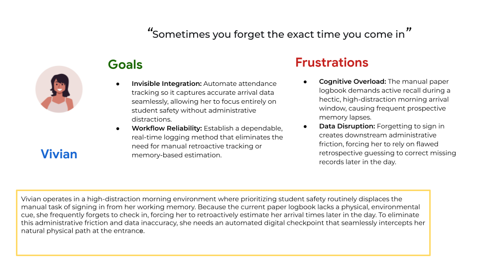
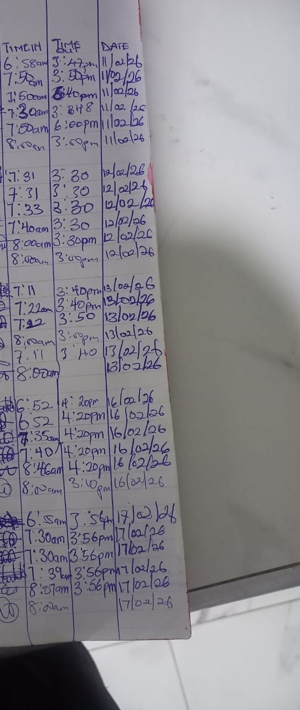
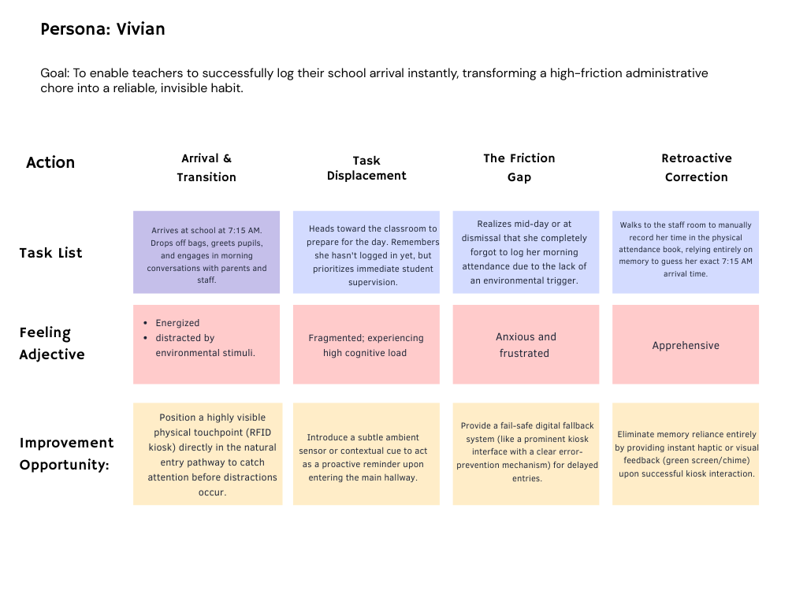
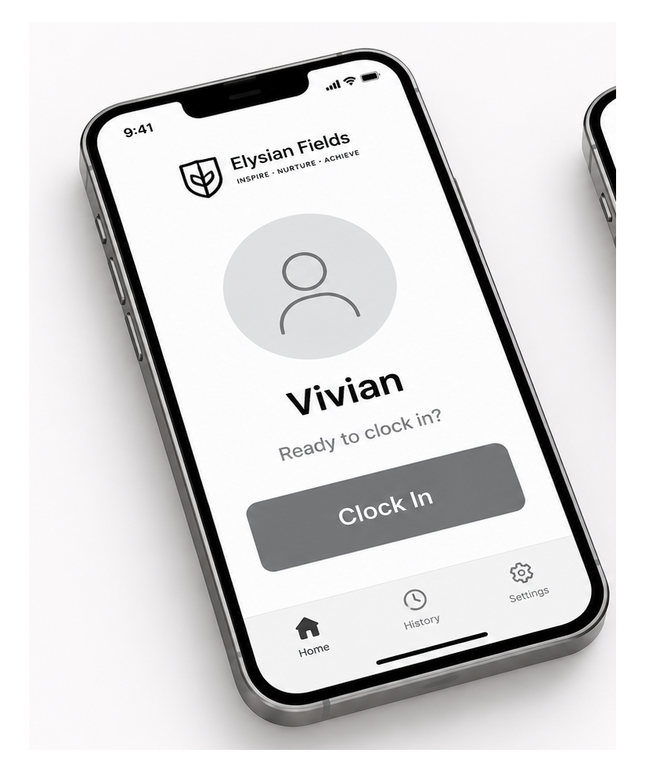
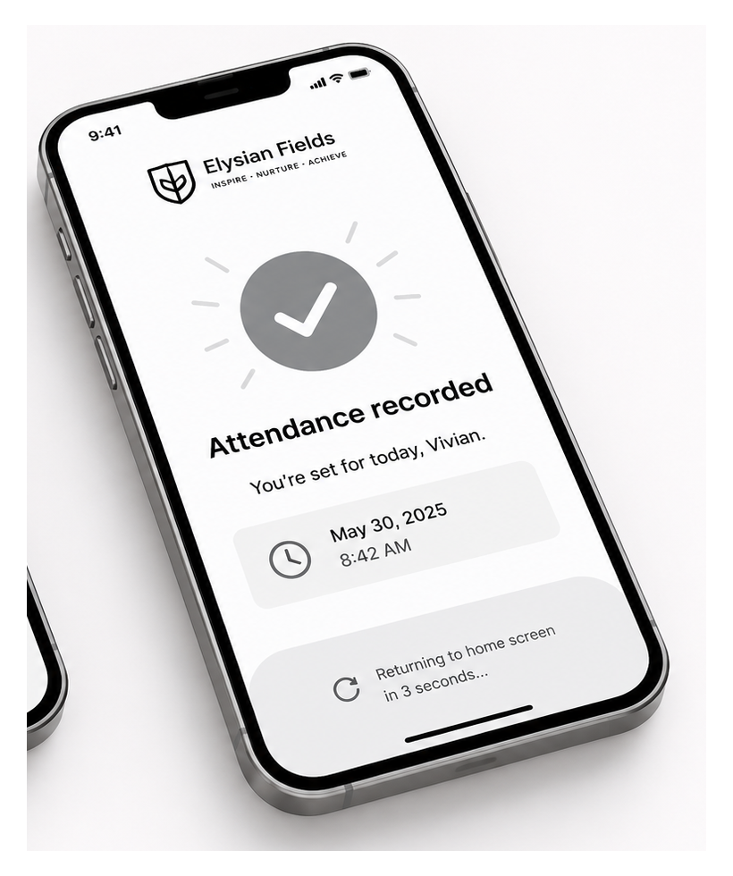
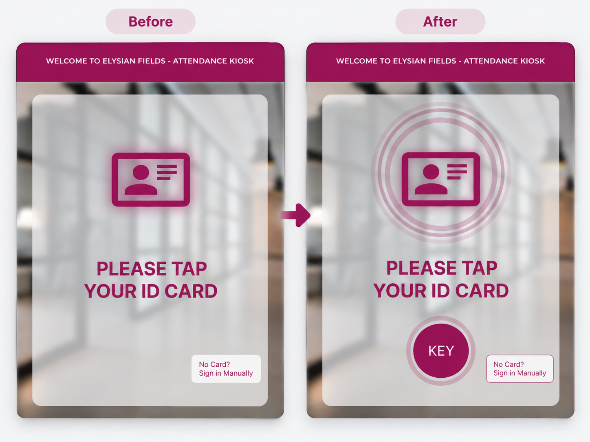
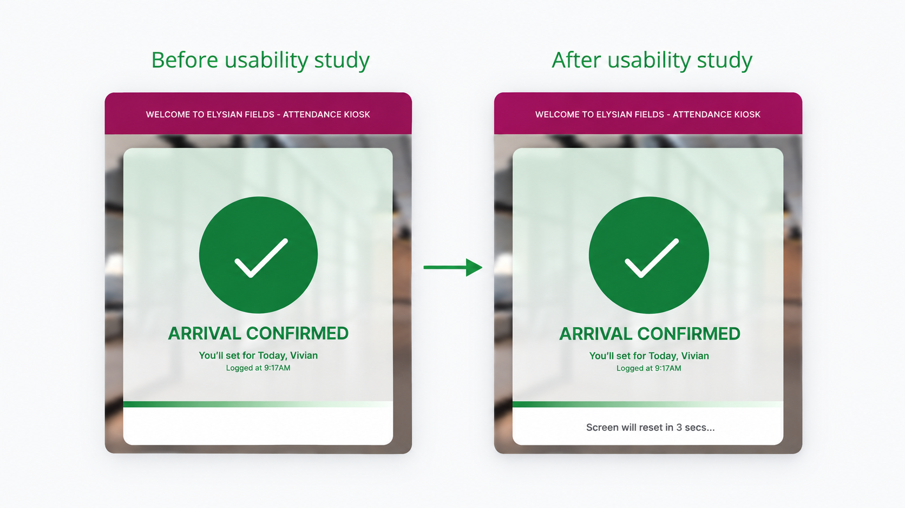
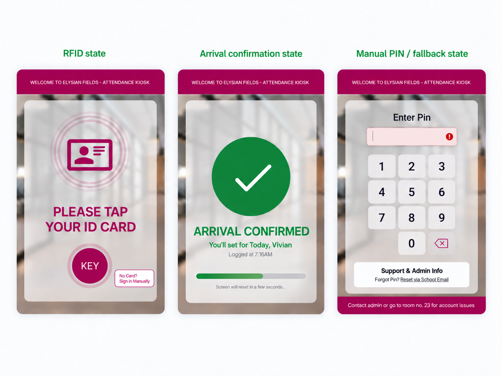

Persona — Vivian

An automated attendance kiosk designed to reduce morning clock-in friction through clear hierarchy, accessible identification, and a more reliable arrival workflow for teachers and administrators.
The Elysian Fields Attendance Kiosk is a shared, entry-point attendance system for teachers and staff. Users identify themselves with an RFID card, receive immediate confirmation of their recorded arrival time, and the interface automatically resets for the next person.
Lead Researcher & Designer
8 months
Interviews, workflow analysis, usability studies
Figma, Maze, Miro, Google Forms

The paper-based attendance process required teachers and staff to manually record their arrival time. During busy mornings this action was often delayed, meaning staff later had to remember the exact time they had arrived.
Data accuracy was affected by delayed logging, forgotten entries, and reliance on human memory.
I assumed users wanted a complete workflow overhaul because they were dissatisfied with the existing attendance system.
Participants were comfortable with the familiar routine. The real failure was inaccurate data caused by memory-based logging and delayed entries.
The solution was not simply a better digital logbook. The attendance touchpoint needed to move into the natural arrival path.
Vivian represents a busy early-childhood educator who needs attendance recording to happen naturally during arrival rather than becoming another action to remember later.


Early mobile concepts explored a simple digital attendance flow. The aim was to give staff a quick way to identify themselves, view their arrival time, and confirm attendance with minimal interaction.

The initial state focused on user identity, arrival time and one clear primary action. The intention was to turn the paper attendance process into a quick digital confirmation.

The confirmation state provided immediate feedback after clocking in. Vivian’s identity, timestamp and success message reassured the user that attendance had been recorded.
I conducted an unmoderated Maze study with the same five participants and used think-aloud feedback to understand whether the concept fitted naturally into their working environment.
Not every participant used a smartphone during work, making a phone-dependent attendance flow unreliable.
Opening a device, finding the interface and interacting with it increased effort for a task that needed to happen quickly during arrival.
Users needed stronger visual hierarchy and more obvious feedback that attendance had been successfully recorded.
Research shifted the solution away from a personal device and toward a shared attendance touchpoint positioned directly within the entry workflow.
Required the user to remember to open a personal device, find the attendance experience and complete the task.
Places the attendance action directly in the arrival path. The user presents an RFID card and receives immediate confirmation with minimal interaction.
Refinements focused on making the required action immediately visible, strengthening confirmation and ensuring that users understood when the kiosk was ready for the next person.
Illuminated circular cues create a strong visual anchor around the card-reader area, helping users understand the expected interaction without reading extensive instructions.

The success state uses a prominent confirmation symbol, the user’s name and recorded arrival time. A visible reset indicator communicates that the kiosk will soon be ready for the next user.

The final system supports the primary RFID journey while maintaining a manual identification route as a fallback when an RFID card cannot be used.

The kiosk needed to remain understandable in a busy physical environment and support different levels of attention, visual ability and motor precision.
Larger text, strong contrast and simplified information hierarchy support users viewing the kiosk while standing.
RFID proximity reduces the need to accurately target small touchscreen controls for the primary attendance action.
Immediate confirmation and a visible reset state communicate what happened and when the system is ready again.
“True UX maturity means designing for the user’s environment, not just the screen.”
Let’s connect to discuss UX research, interaction design, accessibility and human-centred product work.